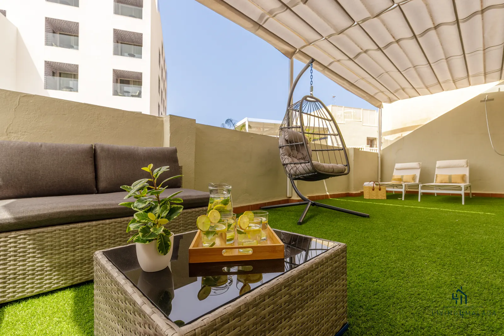

Urban Chic 2B
Sitio para toda la familia
Para seis, con…
- dos dormitorios y dos baños, uno en suite;
- sofá cama en el salón, en la segunda planta.
- 6 huéspedes
- 2 dormitorios
- 2 baños
- 4,68 · Airbnb · 41 opiniones

Seis apartamentos en el centro, para parejas, familias y grupos de hasta seis
La Semana Santa de 2027 en Málaga va del Domingo de Ramos, 21 de marzo, al Domingo de Resurrección, 28 de marzo. Urban Chic Apartments está en Calle Hoyo de Esparteros 9, frente a la plaza del mismo nombre. En 2026 el recorrido oficial pasaba por Calle Atarazanas, la del mercado; el Mercado de Atarazanas está a 2 minutos a pie, Calle Larios queda a 6 y la Plaza de la Constitución, con la Tribuna Principal, a 9.
Mejor precio garantizado
Te llevamos a living4malaga.com, la web oficial de la gestora, para ver precios y fechas libres.
El Jueves y el Viernes Santo son festivos en toda Andalucía.
| Día | Fecha en 2027 |
|---|---|
| Domingo de Ramos | 21 de marzo |
| Lunes Santo | 22 de marzo |
| Martes Santo | 23 de marzo |
| Miércoles Santo | 24 de marzo |
| Jueves Santo | 25 de marzo, festivo |
| Viernes Santo | 26 de marzo, festivo |
| Sábado Santo | 27 de marzo |
| Domingo de Resurrección | 28 de marzo |
Fuente: calendario de fiestas laborales de Andalucía para 2027 (Decreto 84/2026). BOJA n.º 84, 5 de mayo de 2026
Dos apartamentos de dos dormitorios con dos baños y el ático, con tres dormitorios y terraza privada. El edificio tiene ascensor. Todos, salvo el ático, tienen balcón francés a la plaza.
Sitio para toda la familia
Para seis, con…
Para viajar con amigos
Para seis, con…
Tomar el sol sin salir de casa
Para seis, con…
Un dormitorio con cama de matrimonio y, en el salón, un sofá cama doble para dos personas más. Los tres tienen balcón francés a la plaza.
Ideal para parejas, a 2 minutos de Atarazanas
Para parejas, con…
El centro de Málaga, a pie
Para parejas, con…
Una base cómoda para estancias largas
Para parejas, con…
En 2026 el recorrido oficial iba de la Plaza de la Constitución por Calle Larios, Martínez, Atarazanas y Torregorda hasta la Alameda Principal y la Plaza de la Marina, y seguía por Molina Lario hasta la Catedral. Minutos a pie desde Hoyo de Esparteros 9:
Está en Calle Atarazanas, por donde pasaba el recorrido oficial camino de la Alameda Principal.
El tramo del recorrido que sigue a la Tribuna Principal.
La Tribuna Principal del recorrido oficial.
En 2026, tras la Plaza de la Marina, las cofradías seguían por Molina Lario hasta la Torre Sur.
En 2026, de Lunes a Viernes Santo, las cofradías salían por la tarde, a partir de las 15:00, y la mayoría volvía a su templo pasada la medianoche. La llegada más tardía fue a las 04:30, en la madrugada del Martes al Miércoles Santo.
En 2026 se cortaron al tráfico la Alameda Principal, la Plaza de la Marina, el Paseo del Parque, Calle Córdoba y Calle Boquete del Muelle desde las 15:00 de cada día de procesiones hasta que terminaban; del Miércoles al Viernes Santo no se reabrieron. El Ayuntamiento recomendó el transporte público.
La estación Málaga-Centro Alameda, con el tren C1 al aeropuerto, está a 6 minutos a pie. En 2026, en horario de procesiones, la cabecera del autobús del aeropuerto pasó a la Avenida Manuel Agustín Heredia, lateral norte, entre calle San Lorenzo y la Alameda de Colón.
En 2026 las paradas de taxi de Calle Atarazanas, Calle Puerta del Mar y la Plaza de la Marina no funcionaron durante los desfiles.
En 2026 los aparcamientos municipales abrieron las 24 horas, pero de los de Camas, a 4 minutos, y Tejón y Rodríguez no se podía salir mientras duraban los desfiles. El de Avenida de Andalucía, a 4 minutos, también abrió las 24 horas y el plan no le ponía esa restricción.
Fuente: Plan de Movilidad Semana Santa 2026 del Ayuntamiento de Málaga, con los itinerarios de la Agrupación de Cofradías. Los de 2027 pueden cambiar. Plan de Movilidad Semana Santa 2026 · Festivos 2027 (BOJA)


Del Domingo de Ramos, 21 de marzo, al Domingo de Resurrección, 28 de marzo de 2027. El Jueves y el Viernes Santo, 25 y 26 de marzo, son festivos en Andalucía.
En 2026 pasaba por Calle Atarazanas, la del mercado. El Mercado de Atarazanas está a 2 minutos a pie de Hoyo de Esparteros 9, Calle Larios está a 6 minutos, la Plaza de la Constitución, con la Tribuna Principal, a 9, y la Catedral, a 9.
Hoyo de Esparteros no aparece en los itinerarios oficiales de 2026. Ese año el recorrido oficial pasaba por Calle Atarazanas, la del mercado, y el mercado está a 2 minutos a pie. Los itinerarios de 2027 pueden cambiar.
Urban Chic 2B y Urban Chic 3B tienen dos dormitorios, dos baños y sofá cama, para seis. El ático, Urban Penthouse Terrace, tiene tres dormitorios, dos baños y una terraza privada de 15 m² con toldo. El edificio tiene ascensor.
Urban Chic 1, 2A y 3A tienen un dormitorio con cama de matrimonio y balcón francés a la plaza. 2A y 3A tienen baño en suite; Urban Chic 1, cocina abierta al salón. Los tres tienen sofá cama doble para dos personas más.
Sí, pero en 2026 no se podía salir del aparcamiento de Camas, a 4 minutos, mientras duraban los desfiles, y se cortaron la Alameda Principal y otras calles. La estación Centro Alameda está a 6 minutos a pie.
En la web oficial. No lleva comisiones de intermediarios; la diferencia cambia según la fecha.
Mejor precio garantizado en la web oficial. Consulta las fechas libres: